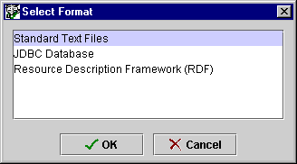

Saving a Project
in a Different Format
Saving a Project
in a Different Format

To save a Protégé-2000 project in a different format:
- Select Save In Format from the Project
menu. A Select Format dialog is displayed.

- Select the format you want. There are three basic formats that are always
displayed:
Standard Text Files (the default) creates project files in Protégé-2000
format. These can also be viewed with any text editor or word processor.
JDBC Database creates the project as a table in a JDBC database. To
do this you must have a database installed and configured on your system.
See Saving a Project as a Database
for more information.
Resource Description Framework (RDF) saves the project in RDF format.
See RDF Support in Protégé-2000
for more information.
If your version of Protégé-2000 has been customized to support additional
formats, then you will also see them in this list.
- Enter a name and location for your project in the Project line of the dialog box. This is the
name of your project (.pprj) file. The same name will automatically be
entered as the name for your ontology and instance files unless you change
it. If you do not
specify a path for the project, by default, the project is saved in the
directory where Protégé-2000 is installed.
- If you have chosen a non-text format, make sure the additional information
needed by Protégé-2000 is correct. See Saving
a Database Project or Saving an RDF
Project for more information.
- Click OK.
You can use this feature to create multiple versions and backups of a project.
Next: Saving a Text Project
Project Table of Contents